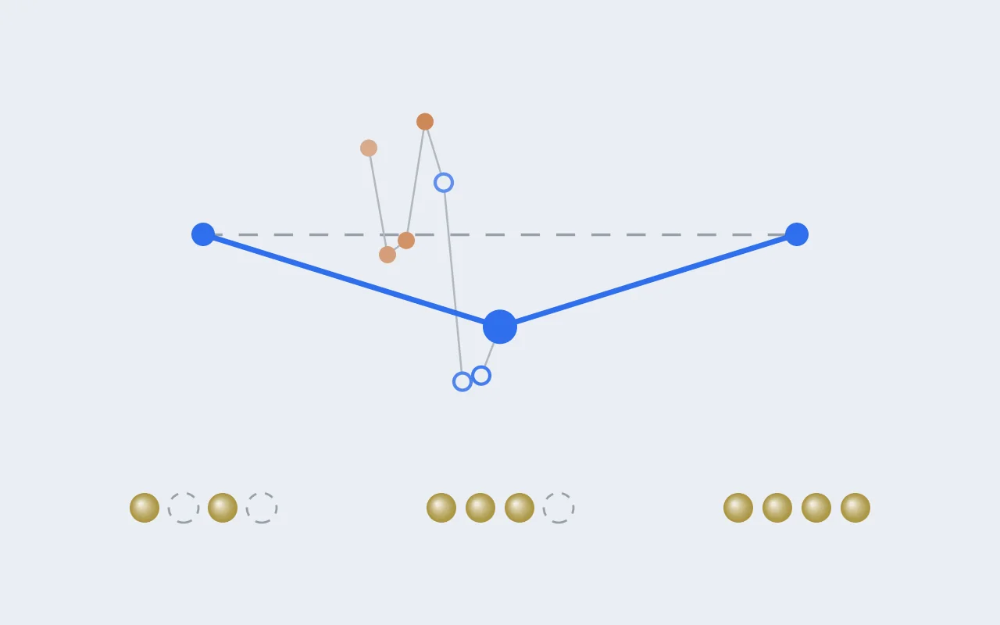

DFT 실습 [12] — 다섯 번 뒤집힌 판정의 끝: Na₀.₇₅MnO₂는 존재한다
실습 [9]의 결론 중 하나는 "충전 중간 조성 Na₀.₇₅MnO₂는 불안정하다"였습니다. 그런데 같은 물질을 같은 방법으로 계산한 문헌은 정반대로 안정하다고 보고했어요. 이 글은 그 충돌을 끝까지 따라가, 왜 우리 결론이 틀렸는지, 무엇을 빠짐없이 계산해야 답이 나오는지, 그리고 최종 답이 무엇인지를 정리한 기록입니다.

초록
층상 산화물 α-NaMnO₂에서 Na를 4분의 1 뺀 Na₀.₇₅MnO₂가 열역학적으로 안정한 상인지를 PBE+U로 다시 판정했다. 중간 조성의 안정성은 그 조성의 가장 낮은 에너지에 달려 있고, 가장 낮은 에너지를 찾으려면 (1) Na 빈자리의 배열과 그 배열을 담는 셀 모양, (2) 어느 Mn이 4+가 되는지의 전하 배치, (3) Mn 스핀의 방향을 모두 탐색해야 한다. 화학식 4개까지의 모든 셀 모양에서 Na 배열과 전하 배치를 열거해 136건, 각 조성의 바닥 배열에서 Mn 8개 셀의 스핀 배치를 전부 열거해 140건을 계산했다. 그 결과 이전에 바닥으로 여긴 배열은 진짜 바닥보다 화학식당 약 30 meV 위에 있었고, Na₀.₇₅MnO₂는 볼록 껍질보다 9.1 meV/화학식 아래의 안정 상으로 확정됐다. 이는 Li 외(2014)의 계산 상평형도와 일치한다. 또한 반강자성 배열의 안정화가 Na를 뺄수록 38.5에서 1.7 meV/화학식으로 줄어들어, 자기 배열을 반영하면 전압이 올라가고 중간 상의 안정성은 얕아진다는 것을 보였다.
1. 문제: 두 결론의 충돌
전지의 전압 곡선 모양은 충전 도중에 어떤 중간 조성이 실제로 생기는지가 정합니다. 중간 조성이 안정하면 곡선에 계단이 생기고, 불안정하면 두 상이 공존하며 전압이 평평하게 유지돼요(실습 [9]). 그래서 "Na₀.₇₅MnO₂가 존재하는가"는 α-NaMnO₂의 전압 곡선을 이해하는 핵심 질문입니다.
| 실습 [9]의 결론 | Li 외 (2014) SI의 계산 | |
|---|---|---|
| 계산 방법 | PBE+U (U = 3.9 eV), 520 eV | PBE+U (U = 3.9 eV), 520 eV (같음) |
| x = 0.75 탐색 범위 | 셀 모양 하나에서 Na 배열 하나 | 화학식 4개까지의 여러 셀 모양, 수백 개 배열 |
| x = 0.75 판정 | 볼록 껍질 위 +11.1 meV/화학식, 불안정 | 볼록 껍질 위에 올라앉은 안정 상 |
계산 설정이 완전히 같은데 결론이 반대라면, 의심할 곳은 하나입니다. 우리가 x = 0.75의 진짜 바닥 배열을 찾지 못했을 가능성이에요. 이 글의 가설은 그것이었습니다.
2. 왜 탐색 범위가 결론을 바꾸나
중간 조성이 안정한지는 그 조성의 가장 낮은 에너지를 양 끝(x = 1, x = 0.5)을 잇는 선과 비교해서 정합니다. 그러니 가장 낮은 배열을 놓치면, 실제로는 선 아래에 있는 조성도 선 위에 있는 것처럼 보여요. 문제는 "배열"이 세 겹이라는 점입니다.
| 탐색 축 | 무엇을 정하나 | 비유 | 에너지 규모 (이 글의 결과) |
|---|---|---|---|
| Na 배열과 셀 모양 | Na를 어느 자리에서 뺄지, 그 무늬를 몇 칸짜리 반복 단위로 담을지 | 벽지 무늬를 어떤 크기·모양의 타일로 반복할지 | 이전 최저와 진짜 바닥이 약 30 meV/화학식 차이 |
| 전하 배치 | Na가 빠진 만큼 어느 Mn이 3+에서 4+가 될지 | 같은 무늬 안에서 어느 칸을 칠할지 | 같은 Na 배열 안에서 대부분 같은 상태로 수렴 |
| 스핀 배치 | Mn 자석 각각이 위를 볼지 아래를 볼지 | 칸마다 화살표 방향 | FM과 바닥이 최대 38.5 meV/화학식 차이 |
핵심은 마지막 열이에요. 판정을 가르는 여유는 화학식당 10 meV 남짓인데, 각 축에서 생길 수 있는 에너지 차이는 그보다 몇 배 큽니다. 그래서 세 축 모두를 빠짐없이 탐색해야만 판정을 믿을 수 있어요. 실습 [9]에서 판정이 세 번 뒤집힌 건 스핀 축을 차례로 넓혔기 때문이었고, 이번에는 Na 배열 축이 남아 있었습니다.
3. 방법: 세 축을 빠짐없이
세 단계로 나눠 계산했습니다.
| 단계 | 한 일 | 계산 수 |
|---|---|---|
| A. Na 배열 | 화학식 1~4개짜리 모든 셀 모양(행렬식 4짜리만 35가지)에서 Na를 빼는 경우를 전부 만들고 대칭으로 같은 것을 제거. x = 0.75와 0.5에서 각각 23개의 서로 다른 Na 배열 | · |
| A'. 전하 배치 | 각 Na 배열에서 어느 Mn이 4+가 될지 열거하고 다시 대칭 제거. 전부 FM으로 1차 이완 | 136 (x = 0.75: 54, x = 0.5: 82) |
| B. 정밀화 | 조성마다 가장 낮은 두 배열을 2차 이완(1차 WAVECAR 재사용) | 4 |
| C. 스핀 | 세 조성의 바닥 배열을 Mn 8개 셀로 늘려, 128가지 스핀 방향에서 대칭과 전체 뒤집기를 뺀 배치를 전부 계산 | 140 (x = 1: 27, x = 0.75: 64, x = 0.5: 49) |
셀 모양을 열거하는 데 쓴 건 에르미트 표준형(HNF)이라는 행렬입니다. 쉽게 말하면 "원래 결정의 반복 단위를 n배로 키우는 모든 서로 다른 방법"의 목록이에요. Na 빈자리가 만드는 무늬는 반복 단위가 커야 담기는데, 같은 크기(화학식 4개)라도 상자를 어느 방향으로 늘리느냐에 따라 담기는 무늬가 달라집니다. 그래서 크기만이 아니라 모양까지 전부 써봐야 모든 무늬가 나와요. Li 외(2014)도 같은 방식으로 화학식 4개까지 탐색했습니다.
4. 사고 보고: 절반을 놓친 열거
첫 시도에서는 x = 0.75의 Na 배열이 9개, x = 0.5가 11개 나왔고, 그걸로 낸 판정은 +5.1 meV/화학식(불안정)이었습니다. 그대로 기록했다면 문헌과 반대인 결론을 한 번 더 확인한 셈이 됐을 거예요.
이상한 점은 작은 데서 보였습니다. x = 0.75에서 가장 낮게 나온 게 새 배열이 아니라 실습 [8]의 옛 계산이었는데, 그 옛 배열은 화학식 4개짜리 셀이라 새 목록에 반드시 들어 있어야 했어요. 그런데 목록 어디에도 없었습니다. 추적해보니 셀 모양 행렬의 규칙을 적을 때 행 기준과 열 기준을 뒤바꿔 써서, 일부 셀 모양은 빠지고 일부는 중복으로 세어지고 있었어요. 고쳐서 다시 세자 Na 배열이 9개에서 23개, 11개에서 23개로 늘었습니다. 이미 계산한 53건은 올바른 목록의 부분집합이라 버릴 건 없었고, 빠진 83건만 더 계산했어요.
교훈
열거 결과는 개수만 보고 믿지 않는다. 이미 아는 구조(여기서는 옛 배열)가 목록 안에 들어 있는지를 검산으로 확인한다. 이 검산 하나가 정반대 결론을 막았다.
5. 결과 ①: 진짜 바닥은 30 meV 아래에 있었다
| 조성 | 이전에 바닥으로 여긴 배열 | 올바른 전체 탐색의 바닥 | 차이 (meV/화학식) |
|---|---|---|---|
| x = 0.75 | 실습 [8]의 15원자 배열 (sc15) | hnf20 | 약 31 |
| x = 0.5 | 실습 [8]의 14원자 배열 (c2) | hnf20 | 약 30 |
이 숫자가 말하는 건 분명합니다. 처음 손으로 고른 배열, 즉 "그럴듯한" 배열은 바닥 근처에도 가지 못했어요. 그리고 30 meV는 판정을 가르는 여유의 세 배입니다. 조성마다 바닥이 얼마나 낮아지느냐에 따라 판정이 얼마든지 뒤집힐 수 있는 크기죠. 실제로 두 조성의 바닥이 모두 내려갔는데 x = 0.75 쪽이 조금 더 내려가면서, FM 기준 판정은 −14.5 meV/화학식(안정)으로 바뀌었습니다. 2차 이완으로 정밀화해도 −13.9로 거의 그대로였어요.
6. 결과 ②: Na를 뺄수록 사라지는 반강자성
마지막 축은 스핀입니다. 세 조성의 바닥 배열에서 스핀 배치를 전부 계산했어요.
| 조성 | 바닥 배치 | 2위, 3위 (바닥 대비) | FM (바닥 대비) |
|---|---|---|---|
| x = 1 | udduuddu | +0.8, +1.4 | +38.5 |
| x = 0.75 | udduudud | +2.3, +2.3 | +15.2 |
| x = 0.5 | ududduud | +1.7 (FM), +4.2 | +1.7 |
두 가지가 읽힙니다.
첫째, Mn³⁺끼리는 반대 방향을 강하게 선호하고, Mn⁴⁺가 늘수록 그 선호가 사라집니다. Li 외(2014)의 SI는 같은 U 값(3.9 eV)에서 Mn³⁺ 줄은 반강자성, Mn⁴⁺ 줄은 강자성 결합이라고 보고했는데, 우리 결과가 정확히 그 경향이에요. Mn³⁺로만 이뤄진 x = 1에서 반강자성의 이득이 가장 크고, Mn⁴⁺가 절반인 x = 0.5에서는 FM과 바닥의 차이가 1.7 meV밖에 안 됩니다.
둘째, x = 1의 바닥 셋이 1.4 meV 안쪽에 몰려 있습니다. 이 셋은 b축 사슬 안의 반평행은 같고 사슬끼리 어떻게 배열되느냐만 다른 배치들이에요. 사슬 사이의 자기 결합이 매우 약하다는 뜻이고, α-NaMnO₂가 사슬 방향으로만 강하게 결합한 준1차원 자성체라는 알려진 성질과 맞습니다.
7. 결과 ③: 최종 판정과 전압 곡선
세 축을 모두 빠짐없이 탐색한 에너지로 볼록 껍질을 그리면 이렇습니다.
Na₀.₇₅MnO₂는 안정 상입니다(−9.1 meV/화학식). Li 외(2014)의 계산 상평형도와 같은 결론이고, 그림으로 대략 읽은 그쪽의 깊이(10 meV 남짓)와 크기까지 비슷해요. 같은 방법으로 같은 범위를 탐색하면 같은 답이 나온다는 걸 독립적으로 확인한 셈입니다.
FM 기준(−14.1)과 자기 바닥 기준(−9.1)의 차이도 6절의 결과로 설명됩니다. 반강자성의 이득은 x = 1에서 가장 크고 x = 0.5에서 거의 없으니, 스핀을 제대로 맞추면 x = 1 끝점만 크게 내려가요. 그러면 양 끝을 잇는 선이 x = 1 쪽에서 기울며 내려오고, x = 0.75와 선의 간격이 좁아집니다.
| 구간 | FM만 | 최종 (자기 바닥) | 실습 [9]의 결론 |
|---|---|---|---|
| x = 1 → 0.75 | 2.268 V | 2.362 V | 평탄 2.453 V |
| x = 0.75 → 0.5 | 2.381 V | 2.435 V | (같은 평탄 구간) |
| 평균 x = 1 → 0.5 | 2.324 V | 2.398 V | 2.453 V |
전압도 같은 원리로 읽힙니다. 첫 구간(x = 1 → 0.75)의 전압은 x = 1이 얼마나 안정한지에 크게 좌우되는데, 반강자성이 x = 1을 가장 많이 안정화시키니 Na를 빼기가 더 어려워지고 전압이 올라가요. FM으로만 계산하면 전압을 체계적으로 낮게 본다는 뜻입니다.
8. 논의
왜 다섯 번이나 뒤집혔나. 판정을 가르는 여유가 화학식당 10 meV 남짓인데, Na 배열 축에서 30 meV, 스핀 축에서 최대 38 meV의 차이가 생길 수 있었기 때문입니다. 어느 한 축이라도 덜 탐색한 상태에서는 판정이 탐색을 넓힐 때마다 움직일 수밖에 없어요. 두 축을 모두 빠짐없이 탐색한 마지막 판정이 앞선 넷과 다른 성격의 답인 이유입니다.
실험과의 비교. 첫 구간 2.36 V는 실험의 첫 평탄 구간 2.63 V보다 0.27 V 낮습니다. PBE+U(U = 3.9 eV)의 계통 오차로 보이며, 실습 [9]에서 본 0.18 V보다 커진 건 x = 0.5에서 더 낮은 배열을 찾아 끝점이 내려갔기 때문이에요. 계통 오차는 같은 방법으로 계산한 조성끼리의 비교에서 대부분 상쇄되므로, 이 연구에서는 절대 전압보다 조성 간 차이로 주장합니다. 한편 실험의 첫 평탄 구간은 Na₀.₉₃에서 Na₀.₇₀까지인데, Li 외(2014)는 그 끝에 생기는 상이 Na₅/₈MnO₂ 초격자라고 밝혔어요. 우리 계산의 "x = 1과 0.75 사이의 2상 구간"은 이 그림과 같은 방향이지만, x = 5/8을 담으려면 화학식 8개짜리 셀이 필요해서 아직 비교하지 못했습니다.
한계. 셀은 Na 배열 탐색에서 화학식 4개, 스핀 탐색에서 Mn 8개까지입니다. 적층은 O3만 봤고(Li 외는 P3도 비교), U는 3.9 eV 하나만 썼어요. Li 외의 SI에 따르면 Mn⁴⁺ 줄의 자기 바닥 상태는 U에 민감해서, x = 0.5 쪽의 자기 에너지는 U 선택에 따라 달라질 수 있습니다.
9. 연구에 주는 의미
α-NaMnO₂ 한 물질에서 얻은 이 결과는, 원소가 네다섯 가지 섞이는 본 연구의 고엔트로피 조성에서 무엇을 해야 하는지를 그대로 알려줍니다.
- 탐색 축이 곱해진다. 고엔트로피 조성에서는 Na 배열, 전하 배치, 스핀 배치에 전이금속 배열까지 곱해집니다. 단일 Mn 계에서도 손으로 고른 배열이 바닥보다 30 meV 위에 있었으니, 다성분 계에서 수작업 선택은 의미가 없어요. 실습 [11]에서 검증한 CHGNet 사전 선별이 필수인 이유입니다.
- 자기 배열은 E_hull과 전압을 체계적으로 움직인다. 반강자성의 이득이 Mn³⁺ 비율에 따라 달라지므로, 자기 배열을 무시하면 전압은 낮게, Mn³⁺가 많은 조성의 안정성은 다르게 보입니다. 본 계산에서도 최종 후보는 스핀까지 샘플링합니다.
- 검증의 완성. 구조(실습 [5]), 얀-텔러(실습 [8]), 상평형도와 자기 구조(이 글), 전압의 계통 오차(이 글), CHGNet(실습 [11])까지, α-NaMnO₂로 계산 절차 전체를 문헌·실험과 대조했습니다. 논문에서는 이 내용이 방법론의 근거로 SI에 들어갑니다.
계산 운영 메모
이번 계산들을 돌리며 클러스터에 대해 알게 된 것도 적어둡니다. 12코어로 보이던 노드는 실제로 물리 코어 6개에 하이퍼스레딩이 켜진 노드였고, 한 노드에 MPI 잡 두 개를 넣으면 둘이 같은 코어에 묶여 10배 넘게 느려졌습니다(같은 계산이 노드를 혼자 쓰면 스텝당 88초, 나눠 쓰면 1,200~1,400초). 그래서 한 노드에 계산 하나를 원칙으로 하고, 노드가 빌 때마다 하나씩 넣는 제출 스크립트를 썼어요.
이날 배운 것들
- 중간 상의 안정성은 "가장 낮은 에너지"의 문제라, 탐색의 완전성이 곧 결론의 신뢰도다.
- 탐색 축은 셋(Na 배열과 셀 모양, 전하 배치, 스핀)이고, 각 축의 에너지 규모가 판정의 여유보다 크다.
- 손으로 고른 "그럴듯한" 배열은 바닥보다 30 meV 위에 있었다.
- 열거는 개수가 아니라 검산으로 믿는다. 이미 아는 구조가 목록에 있는지 확인한다.
- 반강자성의 이득은 Mn³⁺가 만든다. 그래서 자기 배열을 반영하면 전압이 올라가고 중간 상은 얕아진다.
다음. α-NaMnO₂로 계산 절차의 검증이 끝났습니다. 이제 같은 절차를 본 연구의 대상, Mn에 Ni, Fe, Ti가 섞인 고엔트로피 조성 여섯 개에 적용합니다. 64원자 셀에서 CHGNet으로 수천 개 배열을 거르고, 걸러진 배열을 DFT로 확정하는 본 계산의 시작이에요.

Seok
연구하면서 개발합니다. 배터리 재료를 원자 단위에서 계산하는 법을 바닥부터 배우는 중입니다. → 글 더 보기